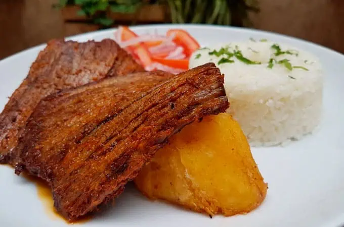

Malaya frita con arroz y plátano
Ingredientes
- 500 g de malaya (falda de res)
- 3 dientes de ajo molidos
- 1 cda de vinagre blanco
- Sal y pimienta al gusto
- Aceite para freír
- 2 plátanos maduros
- Arroz blanco cocido
- Ensalada criolla (opcional)
¡A PREPARAR!
1. Macerar la carne
- Coloca la malaya en un recipiente y adoba con ajo, sal, pimienta y vinagre. Deja reposar al menos 30 minutos.
2. Freír la malaya
- Calienta aceite en una sartén y fríe la malaya hasta que esté bien dorada por ambos lados. Luego corta en tiras o trozos.
3. Freír los plátanos
- Pela los plátanos y fríelos en una sartén con aceite hasta que estén dorados y caramelizados.
4. Servir
- Sirve la malaya frita acompañada de arroz blanco, plátano frito y, si deseas, ensalada criolla.